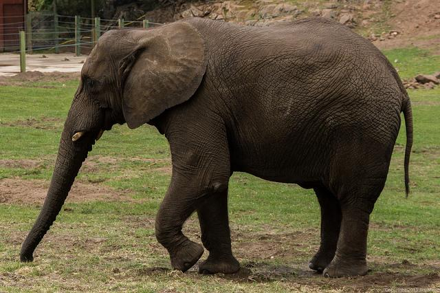
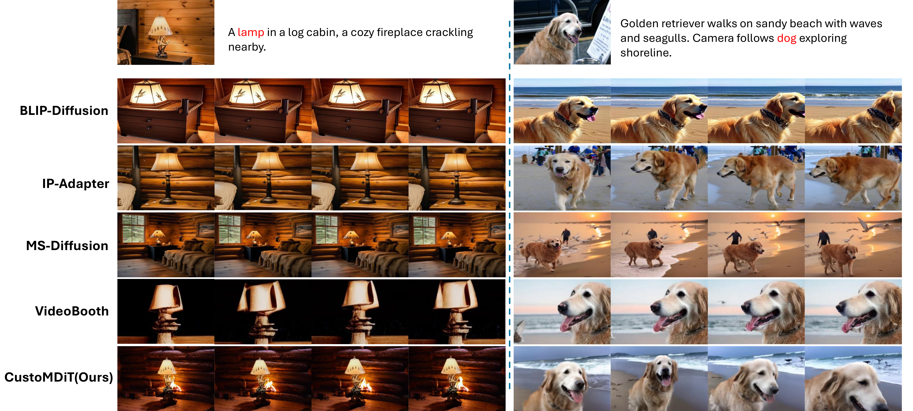

Abstract
Recent progress in video generation has shown impressive visual synthesis capabilities. However, open-domain customized video generation remains limited by the lack of large-scale, annotated datasets capturing diverse identity-specific attributes. To address this, we introduce PexelsCustom-1M, the first publicly available million-scale dataset for identity-preserving video generation, containing one million curated ⟨identity, text, video⟩ triplets across 8,000+ categories.
Leveraging this, we propose CustomDiT, a parameter-efficient framework that adapts a pretrained multimodal Diffusion Transformer into a customized video generator with only 8% additional learnable parameters. Our method surpasses prior state-of-the-art on both existing and our new benchmarks.
To overcome the limited coverage of existing benchmarks (e.g., DreamBooth covers only 100 classes), we construct OpenCustom, a comprehensive evaluation benchmark with 1,000+ categories, created via cross-dataset knowledge fusion from ImageNet and MS-COCO. We open-source the entire ecosystem—including dataset, pipeline, benchmark, and implementations—to support further research.
Generation Results
Given a single reference image, CustomDiT generates identity-preserving videos following the text prompt in a zero-shot manner.




PexelsCustom-1M Dataset
PexelsCustom-1M is the first million-scale, publicly available dataset for open-domain identity-preserving video generation. Each sample is an ⟨identity, text, video⟩ triplet with subject-centric captions and precise segmentation masks.

CustomDiT
CustomDiT conditions text-to-video generation on identity-aware reference images via bias-injected RoPE embeddings, while LoRA layers enable efficient adaptation with only 8% additional learnable parameters. Training follows a two-stage curriculum: Stage 1 without data augmentation (WoDA) to learn identity preservation, and Stage 2 with data augmentation (WtDA) to improve generalization.

Qualitative Comparison
Side-by-side comparison with baseline methods. CustomDiT (rightmost, blue border) best preserves subject identity while generating natural, dynamic videos.
Benchmark Results
Quantitative comparison on DreamBooth-Custom and OpenCustom benchmarks. CustomDiT achieves the best identity preservation (CLIP-I, DINO-I) and dynamic degree while maintaining competitive text alignment.
| Method | Benchmark | M.S.↑ | D.D.↑ | CLIP-T↑ | CLIP-I↑ | DINO-I↑ |
|---|---|---|---|---|---|---|
| OminiControl | DreamBooth | 98.91 | 24.00 | 30.45 | 68.64 | 43.69 |
| OpenCustom | 98.69 | 38.64 | 31.34 | 64.57 | 34.69 | |
| MS-Diffusion | DreamBooth | 99.25 | 9.00 | 30.08 | 76.21 | 62.67 |
| OpenCustom | 98.90 | 20.36 | 31.51 | 75.23 | 59.44 | |
| BLIP-Diffusion | DreamBooth | 98.93 | 4.00 | 27.64 | 76.36 | 54.21 |
| OpenCustom | 98.51 | 20.93 | 28.79 | 76.05 | 54.60 | |
| IP-Adapter | DreamBooth | 98.93 | 7.00 | 28.96 | 76.52 | 54.57 |
| OpenCustom | 98.62 | 29.50 | 30.86 | 74.21 | 49.00 | |
| VideoBooth | DreamBooth | 96.97 | 50.00 | 27.25 | 61.63 | 31.38 |
| OpenCustom | 96.61 | 57.86 | 28.20 | 67.69 | 41.48 | |
| CustomDiT (Ours) | DreamBooth | 97.66 | 61.00 | 29.17 | 76.93 | 66.59 |
| OpenCustom | 97.42 | 70.29 | 30.96 | 75.32 | 65.80 |
Qualitative Comparison (Paper)
